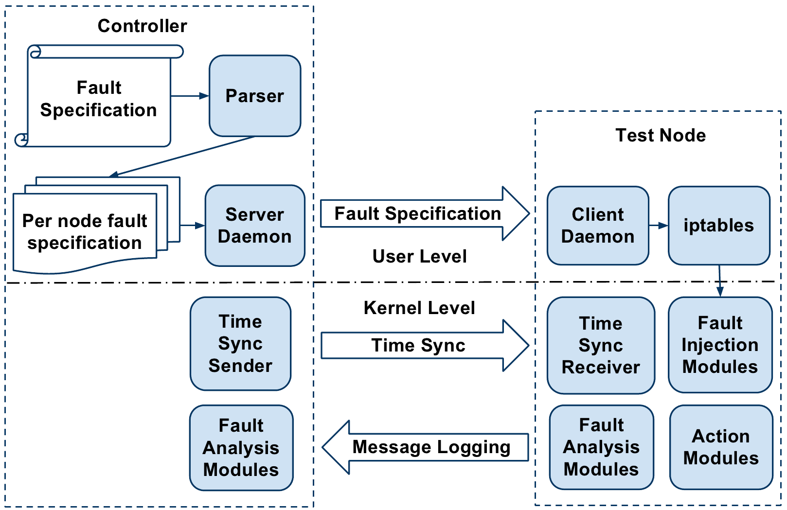
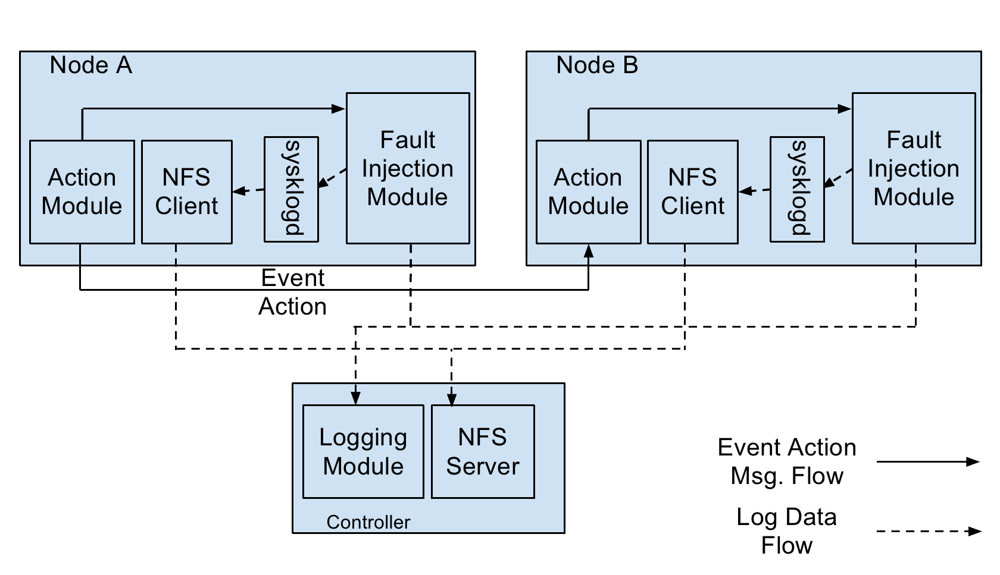

Motivation
Developers of new wireless network protocols typically go through
a tedious and error-prone process of testing and debugging
various network and protocol settings.
They perform a number of tasks manually; such as configuration
of numerous network settings, controlled
reproduction of anomalous protocol behavior, and
traffic capture and analysis.
In addition to miniaturizing the test setup; MINT-2 provides an ability
to inject faults to assist developers and protocol testers to test their
protocol implementations.
The central aim is to speed up the process of testing and analysis of
situations where a protocol implementation fails to behave as expected.
MINT-2 allows the protocol developer to specify faults
using simple iptables-like rules at run time and record the
protocol responses against these faults so that the user can verify
whether a protocol operates as intended.
We have implemented fault injection framework in Linux kernel.
Following sections describe it in more detail. We are also developing
similar fault injection framework for ns3.
Fault Specification
Faults are specified in a file and uploaded by the MiNT-2 user.
The rule in the fault specification file resemble the iptables rule.
MiNT-2 supports unique distributed faults. Which means user can specify the
faults and network monitoring policies for the whole experiment in one file.
Therefore rules used are extensions of the existing iptables rules.
One example of our extended iptables rule is shown as below:
iptables -p tcp -s 1 -enodes 3,7 -anodes * -j reboot
The above extended iptables rule means on event nodes 3 and 7, which is
specified in -enodes option, monitor the TCP traffic from source node 1,
which is specified in -s. Whenever a packet meets such rule, all the
action nodes specified by -anodes * will execute action reboot which is
specified by -j reboot
The parser converts the above specification into an iptables
rule for each event node.
It also replaces the node ID with the IP address of the corresponding
node by referring to a mapping table. Below figure show high level architecture.

For example, the above rule is converted into the following per-node specification for enodes
3 and 7. The parser generated rule is the same for both enodes.
iptables -p tcp -s 192.168.1.1 -j COR --action reboot --mac-source 255:255:255:255
The controller sends the per-node rule specification generated
by the parser to the respective nodes. Once each node receives
its individual fault specifications, the controller will trigger the
user-supplied experiment to exercise the protocol under test.
Protocol Fault Modules
To make sure the correctness of the wireless protocol, the user need to test
their protocol against some rarely seen cases. However, in real network
environment, these corner cases are not easy to happen. In order to solve such
problem, we add a fault-injection feature for the MiNT-2 framework. The
fault-injection component works together with the fault specification rules. If
a certain rule matches a particular packet, the fault-injection will get
triggered and it will inject the specified fault into the real network. Last but
not least, we also need to mention the time synchronization technique utilized
by the fault-injection.
There are two types of Fault-injection modules: (1) local fault-injection
module (2) remote fault-injection module. For each type of faults, we have
implemented both local and remote fault-injection module. All the
fault-injection modules are implemented using xtable extension modules which is
a kind of kernel module. This advantage gives us a great many freedom to
manipulate the kernel functionalities and the network adapter properties such
as the transmit power of the network adapter. Currently we have implemented a
few fault-injection modules:
Reboot
The Reboot Module will emulate the system crash during the experiment. When
launched, the kernel will reboot. All the data saved in memory will be not
valid after reboot. This module is useful when the protocol designer wants to
see if the wireless protocol will tolerate the error when one or more nodes
restart.
Delay
The Delay Module creates a buffer inside the system and each incoming packet is
get delayed for an amount of time. This modules is usually used to test if the
wireless protocol will notice the packet delay and take the packet delay time
as a factor when making route decision for the network packets.
Duplicate
The action performed by Duplicate Module, just as the name conveys, will
duplicate the matching packet and send it out through the same network
interface. The duplicated packet will test if the wireless protocol can
tolerate the existence of multiple copies of the same packet
Reorder
This module, differ from Delay Module in that it will reorder the incoming
packets and send them out in a different order. Some packets might get a very
short period of delay when using this module. However, compared with the Delay
Module, the Reorder Module's delay time is much less.
Modify
The ModifyPacket Module will filter the matching packet and modify the content
of the packet before sending it out. This module takes a parameter of
modification list. For the matching packet, this module will make changes to
the packet according to the modification list.
Event Action Faults
Finding a way to organize the network event dependencies is one of our protocol
evaluation platform's goal. Individual network events can arise without
interactions with other network components. Yet, many network events have
dependencies among each other.
To organize the network events in a
cause-effect order, we introduce the Event-Action message in our framework.

Each individual network event is monitored by
the event node's iptables. When an iptables rule is met and a particular event
is triggered. A coordination module(COR) executes and sends a event-action
message to the specified action node.
The event-action message is a packet using a customized network protocol.
This packet contains the destination address as well as the action command
detail. In case of a event-action chain, the action node which receives an
event-action message will have another event trggered and the action node
will act like another event node and send another event-action message to
the second action node.
When the action node gets the event-action message, it will process the
information inside the packet. First it will check if the packet's target
information is the same as the action node itself. If the event-action
message's target is not the action node itself, it will discard the packet.
Otherwise, the action node will process the action information and parameters.
Finally, the action node injects the specified faults in the event-action
message.
|